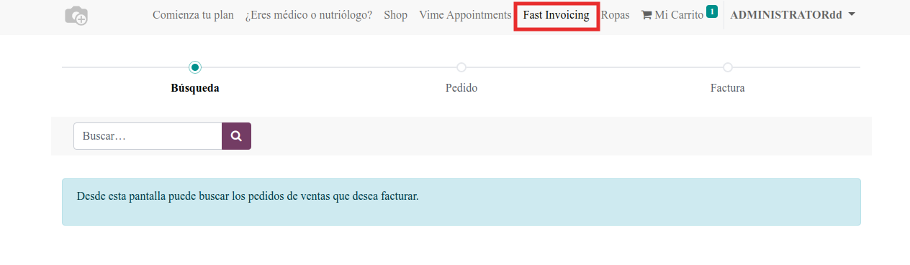
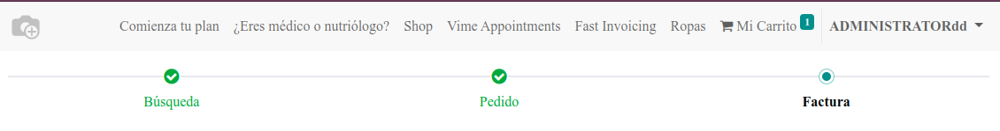
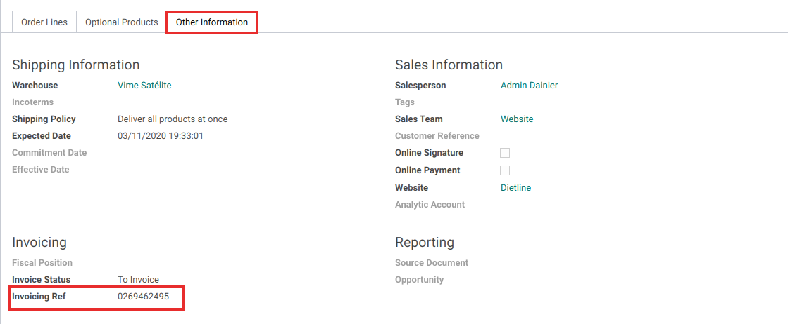
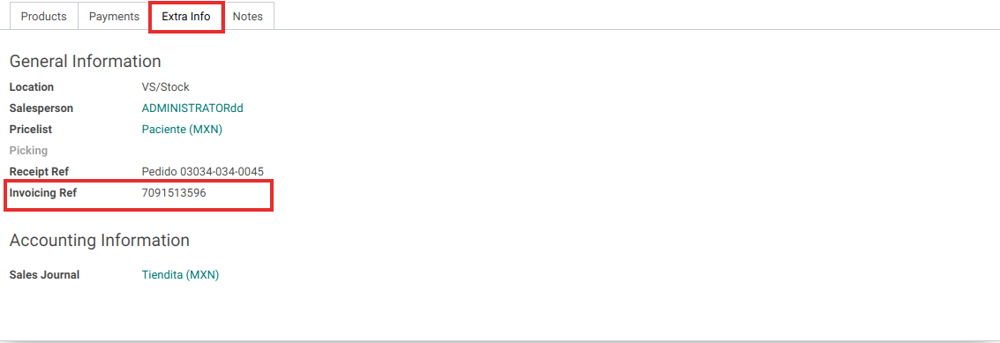

Fast Invoicing
This module add an invoice reference to sale and pos orders to be invoiced in Website.
Website Page
From website enter the invoicing page thought this url /autofactura

Go back just clicking in desired page

Reference Field
In Sale and PoS orders form view you can define an invoicing reference

